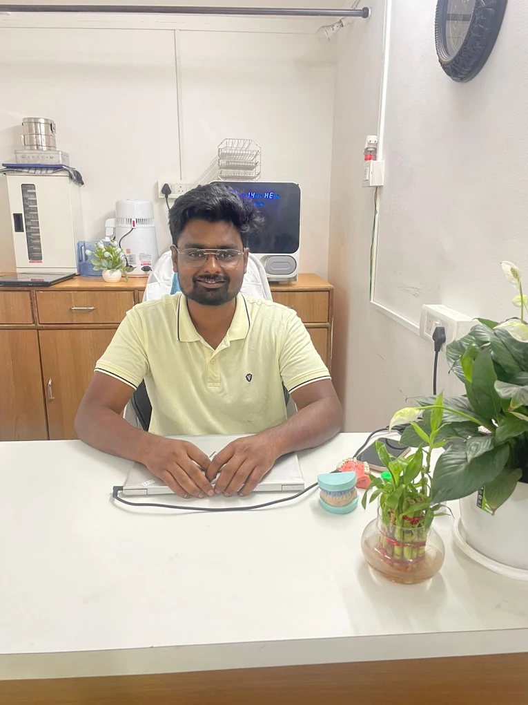

Dr. Mahesh E. Pund
A surgical career built across oncology, trauma reconstruction, implantology and academic dentistry — now practising at Omax Dental & Maxillofacial Center, Pimple Nilakh, Pune.

A specialist's path, from residency to reconstructive surgery
Dr. Mahesh E. Pund is an Oral & Maxillofacial Surgeon and Implantologist practising in Pune. He completed his Master of Dental Surgery (MDS) in Oral & Maxillofacial Surgery at Government Dental College & Hospital, Nagpur, under Maharashtra University of Health Sciences, following his Bachelor of Dental Surgery (BDS) at SMBT Dental College and Hospital, Sangamner.
His clinical work spans minor and major oral surgery — cyst enucleations, fracture fixations, impactions and dental implants — alongside more complex cases in facial trauma, TMJ disorders, and oral pathology, supported by CBCT-guided pre-surgical planning for sinus lift and grafting procedures. Beyond private practice, he has held academic faculty and multi-center consultant roles across Pune and Aurangabad, and remains an active contributor to Indian oral & maxillofacial surgery research and conferences.
Academic foundation
Clinical & academic career
-
Consultant Oral & Maxillofacial Surgeon & Implantologist — Private Practice, Pune (2023–Present) Performs minor and major oral surgeries including cyst enucleations, fracture fixations, and impactions; manages facial trauma, TMJ disorders and oral pathology; conducts sinus lift and grafting procedures with CBCT-guided pre-surgical planning; provides multi-center consultations across diagnostic centers in Pune.
-
Consultant Oral and Maxillofacial Surgeon at : 1)New Thergaon Hospital,Thergaon 2)Gravity hospital and research centre,Triveninagar,Pimpri Chinchwad 3)Icon Hospital,Talawade,Pimpri Chinchwad 4)Prime hospital,new sangavi 5)Vighnaharta Multispeciality hospital,Rahatani 6)Ashirvad accident and general hospital,Hinjewadi 7)Vedanta hospital,Shirur 8)Vighnaharta hospital,Shirur
-
Assistant Professor, Oral & Maxillofacial Surgery — Government Dental College & Hospital, Chhatrapati Sambhajinagar (Jan 2023–Jan 2024) Taught undergraduate and postgraduate students and supervised clinical postings; assisted in oncology, trauma, and orthognathic surgical units; managed inpatient and outpatient surgical care.
-
Emergency On-Call Maxillofacial Junior Resident — GMCH, Nagpur Provided emergency maxillofacial surgical care as part of residency training.
Services under Dr. Mahesh Pund's care
From routine surgical extractions to complex reconstructive procedures — each treatment explained in full on its own page.

Wisdom Tooth & Difficult Tooth Removal
Surgical removal of impacted wisdom teeth and complex extractions other clinics refer onward.
View Details
Dental Implants & Bone Grafting
Implant placement supported by bone grafting for patients with reduced jawbone density.
View Details
Jaw Cysts & Tumour Surgery
Diagnosis and surgical removal of cysts and tumours affecting the jaw and oral tissues.
View Details
Facial Fracture & Trauma Surgery
Surgical treatment of jaw and facial fractures following accidents, falls or sports injuries.
View Details
Jaw Correction / Orthognathic Surgery
Corrective jaw surgery for bite, alignment and facial balance issues.
View Details
TMJ Disorders & Jaw Dislocation
Diagnosis and treatment for jaw joint pain, clicking, locking and dislocation.
View Details
Oral & Facial Infection Management
Prompt surgical and medical management of spreading oral and facial infections.
View Details
Oral Biopsy & Lesion Removal
Diagnostic biopsy and surgical removal of unexplained mouth sores, patches or growths.
View Details
Pre-Prosthetic & Reconstructive Surgery
Surgical preparation of the jaw and gums for dentures, implants or other prosthetics.
View Details
Gummy Smile & Lip Repositioning
Surgical correction for an excessive gum display when smiling.
View Details
Salivary Gland Disorders
Diagnosis and treatment of salivary gland swelling, blockages and infections.
View Details
Orofacial Pain & Surgical Management
Diagnosis and management of persistent facial, jaw or nerve-related pain.
View Details
Emergency Maxillofacial Care
Urgent surgical care for facial injuries, severe infections and acute jaw conditions.
View DetailsPublications, thesis & conferences
Peer-Reviewed Publications
- Zygomaticomaxillary Osteomyelitis due to COVID-19 associated Mucormycosis (CAM): A case series of 10 patients. Journal of Maxillofacial & Oral Surgery, 2022, Vol. 1, Issue 11.
- An unusual case of bilateral fracture of both condyle and coronoid process of the mandible — A case report. American Journal of Otolaryngology and Head and Neck Surgery, 2021, Vol. 4, Issue 7.
- Comparative anatomy and morphometry of mandibular structure in neonates with congenital jaw anomalies: A retrospective study. Journal of Molecular Science (ISSN: 1000-9035).
- Miskin S., Bhandari A., Pund M.E., et al. (2025). Retrospective evaluation of cystic decompression and marsupialisation procedures in odontogenic cysts. Bioinformation, 21(7): 1875–1879. DOI: 10.6026/973206300211875 (IF 1.9, SJIF 8.478).
Thesis
Efficacy of short implants as compared to conventional implants in the posterior edentulous atrophic mandible — A randomised controlled trial.
Awards
1st Prize in Paper Presentation — Maharashtra State Chapter, 7th Conference, Dhule, 2020.
Professional Memberships
Association of Oral & Maxillofacial Surgery of India (AOMSI) · AOMSI Maharashtra State Chapter
Common questions about Dr. Mahesh Pund
Dr. Mahesh E. Pund is an Oral & Maxillofacial Surgeon and Implantologist based in Pune, holding a BDS and an MDS in Oral & Maxillofacial Surgery from Government Dental College & Hospital, Nagpur. He practises at Omax Dental & Maxillofacial Center in Pimple Nilakh.
His core areas are oral & maxillofacial oncology, maxillofacial trauma, dental implants (including basal and zygomatic implants), and minor and major oral surgery.
He practises at Omax Dental & Maxillofacial Center, Vishal Nagar, Pimple Nilakh, Pimpri-Chinchwad, Pune.
Yes, he has served as Assistant Professor of Oral & Maxillofacial Surgery at Government Dental College & Hospital, Chhatrapati Sambhajinagar, teaching undergraduate and postgraduate students and supervising clinical postings.
Yes, facial trauma and fracture fixation are among his core clinical areas, alongside cyst enucleation, impactions, and TMJ disorders.
Consult Dr. Mahesh Pund
Available at Omax Dental & Maxillofacial Center, Pimple Nilakh — Mon–Sat, 10:00 AM–1:30 PM & 5:00–9:00 PM.